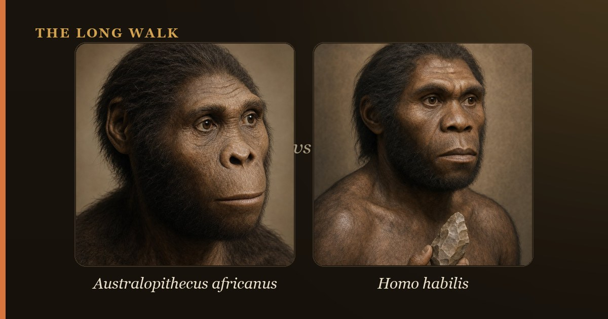

Australopithecus sediba (1.98 million years ago) possessed a mosaic anatomy—small australopith-like brain and long arms paired with Homo-like precision hands and a modern pelvis. Homo habilis (2.3–1.5 million years ago) was larger-brained and associated with stone tools, but both species reveal that the origin of our genus Homo was a gradual, messy transition, not a clean evolutionary jump.

The origin of our genus Homo remains one of paleoanthropology's most contentious questions. Two species dominate the debate: Australopithecus sediba, discovered in South Africa in 2008, and Homo habilis, known from East and South Africa since the 1960s. Both lived during Africa's crucial transition from ape-like australopithecines to recognizable humans. Yet they lived at different times, possessed different body plans, and spark fierce disagreement about which, if either, gave rise to us.
Understanding the differences between these two species reveals how human evolution actually unfolded. Rather than a single ancestor handing the baton neatly to its descendant, the fossil record shows a messy, overlapping story of multiple lineages experimenting with new body plans and survival strategies. Australopithecus sediba and Homo habilis embodied this experimental phase.
| At a glance | Australopithecus sediba | Homo habilis |
|---|---|---|
| Age | ~1.98 million years ago | ~2.3–1.5 million years ago |
| Site & discovery | Malapa Cave, South Africa (2008) | Olduvai Gorge, East Africa; KNM-ER sites, Kenya |
| Brain size | ~420 cubic centimeters | ~510–690 cubic centimeters |
| Body size & limbs | Small; long arms (australopith-like) | Small; long arms (australopith-like) |
| Hands | Modern-looking; capable of precision grip | Primitive wrist; mixed capabilities |
| Teeth | Small & Homo-like | Large, variable |
| Proposed role | Ancestor of Homo? (debated) | Early member of genus Homo |
Who was Australopithecus sediba?
In August 2008, a nine-year-old boy named Matthew Berger, son of renowned paleoanthropologist Lee Berger, made one of paleoanthropology's greatest discoveries. Spelunking in Malapa Cave near Johannesburg, South Africa, he spotted bones jutting from the cave wall. Those bones belonged to two partial skeletons, dated to 1.98 million years ago, belonging to a new species: Australopithecus sediba.
The two individuals became famous: MH1, a juvenile male nicknamed "Karabo" (meaning "answer" in Sotho), and MH2, an adult female. Their anatomy was startling. Sediba possessed a small brain—only about 420 cubic centimeters, barely larger than a modern chimpanzee's—and long arms suitable for climbing trees, traits inherited from older australopithecines. Yet its pelvis was remarkably modern and human-like, its hand showed adaptations for precision gripping (the foundation of toolmaking), and its teeth were small and more aligned with the genus Homo than with its australopith cousins.
This mixture of old and new features made sediba a mosaic—a species caught mid-transformation. Lee Berger provocatively argued that sediba was a direct ancestor of the genus Homo, even though it lived much more recently than Homo habilis and other early Homo species.
Who was Homo habilis?
Homo habilis emerged on the scene earlier, around 2.3 million years ago, in the fossil-rich deposits of East Africa. The name habilis means "handy man"—a label earned by its association with Oldowan stone tools, the earliest known artifacts of toolmaking. The type specimen, OH 7 from Olduvai Gorge in Tanzania, and later finds like KNM-ER 1813 from Kenya, defined the species.
Homo habilis was small-bodied, with a brain size of 510 to 690 cubic centimeters—substantially larger than sediba's. Its limb proportions retained ancestral traits; like sediba, it possessed long arms relative to its legs, a reminder of its australopith heritage. Yet its classification as a member of the genus Homo signaled that paleoanthropologists saw something genuinely new: a tool-using ancestor that represented a significant cognitive and behavioral leap. Whether habilis actually made those Oldowan tools remains debated, but the association stuck.
Key anatomical differences
Brain size offers the starkest contrast. Sediba's 420 cubic centimeters falls squarely in the australopithecine range; habilis's 510–690 cubic centimeters marks a clear expansion, a trend that would accelerate dramatically in later Homo species. This difference likely correlates with enhanced cognitive abilities and behavioral flexibility.
The hand reveals another crucial distinction. Sediba possessed an extraordinarily modern hand structure, with a long thumb and precision-grip capabilities that would support complex toolmaking. Habilis, by contrast, possessed a more primitive wrist and hand, mixing old and new features. Paradoxically, the "handy man" had less capable hands than the older australopithecine, though habilis may have possessed better overall dexterity through improved neural control.
Both species retained long arms and small bodies, but sediba's pelvis was notably more modern—more human-like in its overall shape and proportions. Habilis retained a more primitive pelvis, closer to its australopithecine roots. In teeth, sediba aligned more closely with Homo (small, uniform), while habilis showed greater size variation and a less specialized dental anatomy.
The ancestor debate and the timing problem
Here lies the crux of the controversy. The earliest fossils assigned to the genus Homo appear around 2.8 million years ago (the Ledi-Geraru jaw from Ethiopia). Homo habilis arrived by 2.3 million years ago. But Australopithecus sediba lived at 1.98 million years ago—more than 300,000 years after habilis had already appeared on the scene.
This timing creates a severe problem for Lee Berger's hypothesis that sediba was an ancestor of Homo. How can a species be the ancestor of its descendants if it arrived so late? Sediba cannot be the ancestor of habilis; it could only be an ancestor of later Homo species. Critics argue that sediba is more likely a late-surviving, specialized branch of the australopithecine lineage—a dead end, not a human ancestor.
Berger's supporters counter that our fossil record remains incomplete. Sediba could represent a late-surviving population of an older lineage that gave rise to Homo; the true ancestral species might never fossilize, or we simply have not found it yet. Under this view, sediba shows us the kind of anatomy that early Homo ancestors possessed, even if sediba itself is not the direct progenitor.
Did they overlap?
Yes—and this overlap adds another layer of complexity. Homo habilis persisted from roughly 2.3 to 1.5 million years ago. Australopithecus sediba lived 1.98 million years ago. For at least 400,000 years, these two species coexisted in Africa, possibly even in the same regions. This overlap demolishes the idea of a simple, linear chain of descent. Instead, it suggests that Africa during this period was home to multiple hominin lineages, each adapting to local environments, some persisting longer than others.
Coexistence also implies that you cannot explain the disappearance of one species as merely the arrival of a superior descendant. Multiple species shared Africa for millennia, and the factors driving the eventual dominance of one Homo lineage over its competitors remain obscure.
Why it matters
The Australopithecus sediba versus Homo habilis debate captures something profound about human evolution. Neither our fossil record nor our understanding of what makes a species "human" is as clean as we might wish. Both sediba and habilis were mosaic species, combining old and new traits in different proportions. Both lived during Africa's great experiment with bipedalism, stone tools, and expanding brains—the ingredients of humanity.
What matters most is not settling which species was "our" ancestor. Rather, these discoveries reveal that becoming human was a protracted, chaotic process. Early hominin species tested different body plans, from sediba's surprisingly modern hands to habilis's expanding brain. Some lineages succeeded; others vanished. The messy fossil record, far from being a deficiency, is an honest window into evolution as it actually occurred: not as a guided ascent toward predetermined humanity, but as a branching bush of populations navigating African environments over millions of years.
For a deeper look at the broader landscape of early human origins, explore how Homo habilis compares to Homo erectus, or learn more about other australopithecine lineages and their relationship to Homo naledi. You can also visit our full species index to explore the entire human family tree.
See where sediba and habilis sit near the base of our genus on the interactive family tree.
Explore the family tree →Frequently asked questions
Who was Australopithecus sediba?
In August 2008, a nine-year-old boy named Matthew Berger, son of renowned paleoanthropologist Lee Berger, made one of paleoanthropology's greatest discoveries. Spelunking in Malapa Cave near Johannesburg, South Africa, he spotted bones jutting from the cave wall.
Who was Homo habilis?
Homo habilis emerged on the scene earlier, around 2.3 million years ago, in the fossil-rich deposits of East Africa. The name habilis means "handy man"—a label earned by its association with Oldowan stone tools, the earliest known artifacts of toolmaking.
Did they overlap?
Yes—and this overlap adds another layer of complexity. Homo habilis persisted from roughly 2.3 to 1.5 million years ago. Australopithecus sediba lived 1.98 million years ago. For at least 400,000 years, these two species coexisted in Africa, possibly even in the same regions.
- Berger, L.R. et al. (2010). 'Australopithecus sediba: a new species of Homo-like australopith from South Africa.' Science 328. science.org
- Smithsonian Human Origins — Australopithecus sediba. humanorigins.si.edu
- Smithsonian Human Origins — Homo habilis. humanorigins.si.edu